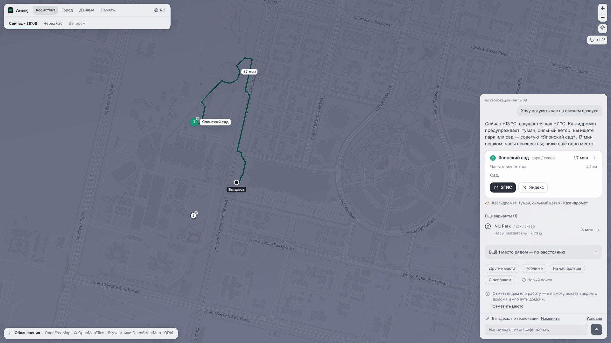
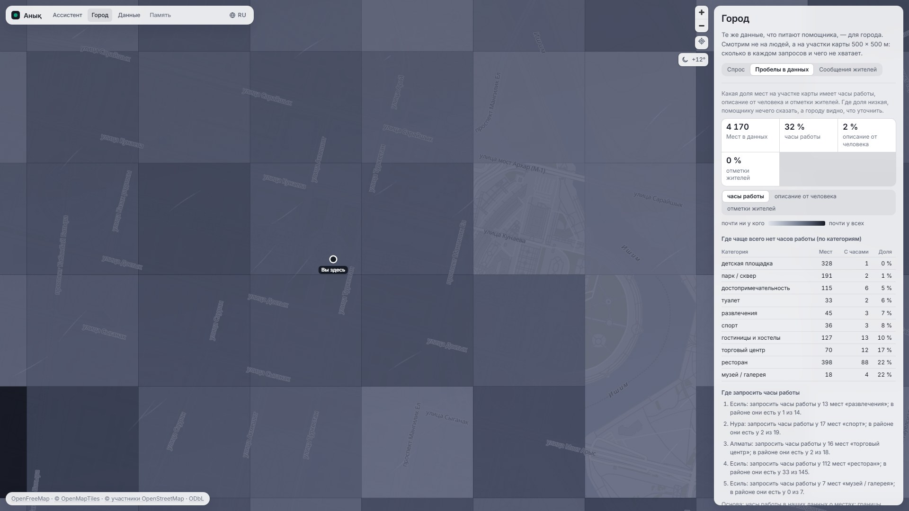
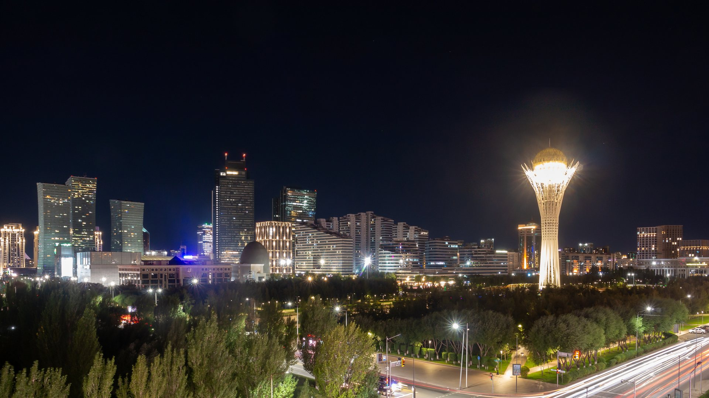

Анық.
Куда пойти в Астане прямо сейчас.
anyq.an8kk.dev
Сәлеметсіздер ме! Я Ануар, это Анық — по-казахски «ясно». Он подсказывает, куда пойти в Астане прямо сейчас, и советует только реальные места из открытых данных. Анық уже работает: адрес на экране, его можно открыть с телефона прямо сейчас.
«Только реальные места»: app/eval/results/canonical.md, 0 выдуманных мест на 120 тестовых сценариях. Фото: Bernard Gagnon, CC0 (слайд «Источники»).
Найти место рядом легко. Понять, открыто ли оно, успеешь ли и подойдёт ли оно тебе, — нет. Найти кафе или парк рядом сегодня легко: любой справочник покажет точки на карте. Трудно понять другое: открыто ли место прямо сейчас, успеешь ли дойти за своё время и подойдёт ли оно именно тебе. На эти три вопроса и отвечает Анық.
Фото: Dauren Nabijan, CC0 (слайд «Источники»).
Пишешь, что хочешь — Анық за секунды даёт план: куда, сколько идти и почему.
anyq.an8kk.dev

Все пять сценариев из ТЗ работают.
© OpenStreetMap contributors
Вот первый сценарий из задания на живом стенде: человек у Mega Silk Way пишет «Хочу погулять час на свежем воздухе». Анық учёл погоду и предупреждение Казгидромета, выбрал «Японский сад» и провёл путь пешком по улицам — 17 минут, а запасной вариант, NU Park, в восьми минутах. Время, погода и ответ настоящие, ничего не закреплено. И так проходят все пять сценариев из задания — без единого нарушения в нашей проверке.
Кадр hero_walk: shots/shots.jsonl (19.10.2026 19:08, старт Mega Silk Way), проверка — shots/factcheck.md; линия пути на карте — place_legs[0].shape того же ответа. Пять сценариев ТЗ (tz1–tz5) без нарушений: app/eval/results/runs_poi.enriched_offline.jsonl и canonical.md, «ИИ-режим».
Город как на ладони: спутник и маршрут по настоящим улицам.
© OpenStreetMap contributors · Powered by Esri
В Анық появился слой «Спутник» — снимки Esri World Imagery, на них видна каждая дорожка бульвара. Тот же запрос «Хочу погулять час на свежем воздухе», теперь у Байтерека: Анық ведёт до Водно-Зелёного бульвара, восемь минут пешком, по настоящим улицам и бульвару Нуржол, а не по прямой.
Кадр sat_walk: shots/shots.jsonl — запуск приложения из ветки со слоем «Спутник» в боевом режиме (python -m web, без флагов WALKS_*), 19.10.2026 22:50, камера z17 над Байтереком; проверка — shots/factcheck.md, раздел «Кадры не со стенда». Imagery: Powered by Esri · Source: Esri, Vantor, GeoEye, Earthstar Geographics, CNES/Airbus DS, USDA, USGS, AeroGRID, IGN, and the GIS User Community.
Қазақша, «Балаға қайда баруға болады?» у EXPO
English, «Quiet cafe to work for an hour» у Байтерека
русский. «Куда сходить с ребёнком на час?» у Хан Шатыра
© OpenStreetMap contributors
Анық отвечает на языке вопроса. По-казахски у EXPO спросили, куда сходить с ребёнком, — и он советует музей в двух минутах. По-английски — тихое кафе, где можно час поработать, по-русски — детский центр у Хан Шатыра, открытый до 22:00.
Кадры kids_kk, cafe_en, kids_ru: shots/shots.jsonl, проверка — shots/factcheck.md.
Не «что рядом», а «что подходит вам».
«Я интроверт: люблю тишину, книги и парки»
Под ваш вайб: тихо (парк) Основание — из данных о самом месте.
© OpenStreetMap contributors
Справочник отвечает, что есть рядом. Анық — что подходит именно вам. Человек пишет о себе своими словами, и под местом появляется строка, почему оно подходит: «Под ваш вайб: тихо». Это основание из данных о самом месте, а не догадка модели.
Кадр vibe: shots/shots.jsonl, проверка — shots/factcheck.md; строка основания — app/walks/vibe.py (place_evidence).
Куда идти, решает код. ИИ объясняет, код проверяет.
0
выдуманных мест на 120 проверочных запросах
100%
честных ответов, когда данных нет
Gemma 4 (открытые веса Google) через API, Gemini запасной; проверка — 120 тестовых сценариев.
Как это устроено: куда идти, решает код — радиус из вашего времени, часы на момент прихода, погода. ИИ только объясняет выбор и не может добавить место: ответ с несуществующим местом отклоняется проверкой. Поэтому на 120 тестовых сценариях — ни одного выдуманного места, а когда данных нет, Анық прямо пишет «неизвестно». Модель — Gemma 4 с открытыми весами Google через API, запасная — Gemini.
app/eval/results/canonical.md, прогоны 19.10.2026, база poi.enriched: 120 кейсов, hallucinated_poi 0, honest_unknown_rate 100 % на всех наборах. Место не из кандидатов отбрасывается — app/walks/generate.py; строка «ответ ИИ не прошёл проверку poi_id (→ шаблон)» — canonical.md. Модель и запасная: app/README.md; приложение работает на нашем сервере.
Уже работает: живой стенд и первые пользователи
anyq.an8kk.dev живой стенд Исправлено в тот же день по отзывам первых пользователей 7 раундов проверкисмоделированными пользователями (ИИ-персоны)
3 000 +
автотестов
Анық уже работает на живом стенде, и у него есть первые пользователи: по их отзывам я исправлял ответы в тот же день. Ещё семь раундов стенд проверяли смоделированные пользователи — это ИИ-персоны, не люди. На коде проходят 3 000+ автотестов, а качество ответов мы меряем на 120 тестовых сценариях.
Отзывы первых пользователей 19.10.2026; ИИ-персоны, 7 раундов — docs/dialog.md; 3 000+ автотестов — pytest 19.10.2026 (ворота на main: 3 010 и больше); 120 сценариев — canonical.md.
0,3с
Ход ответа виден через 0,3 с, сам ответ — за секунды.
Работает, даже если ИИ недоступен.
Gemma 4 → Gemini → ответ из тех же данных без ИИ
Через треть секунды на экране уже виден ход ответа, а сам ответ приходит за секунды. Ответ пишет Gemma 4, запасная — Gemini, а если недоступны обе, Анық всё равно отвечает — из тех же данных и с теми же местами, потому что их выбирает код. Так было 16 октября, когда у ключа кончилась квота: Анық отвечал из данных, и выдуманных мест не было.
0,3 с — app/web/static/js/assistant.js, WAIT_SHAPE = 300 мс; цепочка Gemma 4 → Gemini → ответ из данных без ИИ — app/README.md, «Цепочка звеньев», порядок звеньев на стенде сверен 19.10.2026; 16.10 — canonical.md, «Исторический стресс-прогон».
Городу — карта спроса и качества данных по районам: что ищут люди и где обновить сведения.
anyq.an8kk.dev/#/city

сведения о местах: беднее полнее
Бесплатно для жителей и туристов. Акимат, Visit Astana и НИЦ могут получать эту карту с выгрузкой CSV и GeoJSON.
© OpenStreetMap contributors
Те же данные работают на город. Страница «Город» показывает по районам и участкам 500 на 500 метров, что ищут люди и где сведения о местах пора обновить. Для жителей и туристов Анық бесплатен, а акимат, Visit Astana и НИЦ могут получать эту карту спроса и качества данных с выгрузкой в CSV и GeoJSON.
Кадр city: shots/shots.jsonl; участок 500 м — app/walks/reqlog.py (CELL_M), группы от 5 запросов — app/walks/demand.py (K_DEFAULT); выгрузка — app/web/city.py; возможные заказчики — docs/qa.md, вопрос 12; закраска районов — доля мест с часами работы, страница «Данные» (coverage.districts) 19.10.2026.
4 170
мест из открытых источников.
2 970 OpenStreetMap643 Overture Maps412 госреестры133 сайты заведений12 Wikidata
Пишем «открыто» — называем источник и дату. Не знаем — пишем «неизвестно».
Сбор автоматический: базу собирают скрипты, афиша на стенде обновляется сама каждые 6 часов.
Лицензии всех источников — в репозитории.
© OpenStreetMap contributors
В базе 4 170 мест, и все из открытых источников: OpenStreetMap, Overture Maps, госреестры, сайты заведений; на карте каждое место окрашено по своему источнику. Сбор автоматический: базу собирают скрипты, а афиша на стенде обновляется сама каждые шесть часов. Если Анық пишет «открыто», на карточке видно, откуда часы и на какую дату; если не знает — так и пишет.
Страница «Данные» 19.10.2026 17:15 (coverage.places); data/poi.enriched.json, поле source, места без остановок; сбор — collect/ (python -m collect.build, слои — collect/SOURCES.md §24); афиша — collect/events, таймер deploy/vps/anyq-events.timer; источник и дата часов на карточке — app/walks/models.py (hours_source); лицензии — data/NOTICE.md, docs/licensing.md.
Риски — и что мы с ними сделали
Неполные данные: часы есть у трети мест Без данных «открыто» не пишем, ставим «часы неизвестны».
Ошибка ИИ Место выбирает код, ИИ только объясняет.
ИИ недоступен Ответ из тех же данных без ИИ.
Приватность Точка округляется до ~100 м, текст запроса и точные координаты не хранятся. Статистика — участками 500 м, только группы от 5 запросов. Профиль — по желанию, удаляется кнопкой «Забыть всё».
Качество казахского Эксперт по казахскому NLP и тест-набор в пилоте.
Теперь о рисках и о том, что мы с ними сделали. Данные неполные — часы есть у трети мест, поэтому без данных Анық не пишет «открыто»; ошибку ИИ страхует код, а без ИИ ответ собирается из тех же данных. Точку мы округляем до ста метров и не храним ни текст запроса, ни координаты; город видит только группы от пяти запросов, а профиль удаляется одной кнопкой. Казахский усилим в пилоте вместе с экспертом по казахскому NLP.
Часы у 31,8 % мест — страница «Данные» 19.10.2026 (coverage.hours); canonical.md: honest_unknown_rate 100 %, hallucinated_poi 0 на 120 кейсах; README.md, «Приватность»; app/walks/reqlog.py, app/walks/demand.py, app/walks/profile.py («Забыть всё»); эксперт — docs/qa.md, вопрос 15.
Следующий шаг — пилот с НИЦ Smart City.
1 Пилот 4 недели в районе или кампусе 2 Подключение данных города: часы, адреса 3 Отчёт по метрикам
Следующий шаг — пилот с НИЦ Smart City: четыре недели в одном районе или на кампусе. Подключаем данные города — часы и адреса, — а в конце даём отчёт по метрикам. Стенд и проверка ответов уже готовы, так что мерить можно с первого дня пилота.
docs/qa.md, вопрос 15; срок 4 недели — значение по умолчанию.

Рақмет!
Рақмет! Анық работает уже сейчас: наведите камеру на код или откройте anyq.an8kk.dev. Готов ответить на вопросы.
Фото: Matti Blume, CC BY-SA 4.0 (слайд «Источники»).
Источники
Задача : «ИИ-помощник по прогулкам в городе Астана», НИЦ Smart City, Build with AI 2026, раздел 1.Стенд anyq.an8kk.dev , страница «Данные», снимок 19.10.2026 17:15 (deck/data/api_data_2026-10-19.json): 4 170 мест, часы у 31,8 %, доли по районам.База data/poi.enriched.json : происхождение мест — OpenStreetMap 2 970, Overture Maps 643, госреестры 412, сайты заведений 133, Wikidata 12; районы — data/districts.geojson.Оценка app/eval/results/canonical.md , прогоны 19.10.2026: 120 тестовых сценариев, 0 выдуманных мест, честное «неизвестно» в 100 %; пять сценариев ТЗ (tz1–tz5) без нарушений — runs_poi.enriched_offline.jsonl и «ИИ-режим» 17.10.Тесты : 3 000+ автотестов, pytest 19.10.2026; 7 раундов смоделированных пользователей (ИИ-персоны) — docs/dialog.md.Модель : Gemma 4 (открытые веса Google) через API, запасная Gemini; приложение работает на нашем сервере — app/README.md.Скорость : ход ответа через 0,3 с — app/web/static/js/assistant.js; ответ без ИИ — app/README.md; квота 16.10 — canonical.md, «Исторический стресс-прогон».Приватность : README.md, «Приватность»; участки 500 м — app/walks/reqlog.py; группы от 5 запросов — app/walks/demand.py; «Забыть всё» — app/walks/profile.py.Город : выгрузка CSV и GeoJSON — app/web/city.py; возможные заказчики — docs/qa.md, вопрос 12.Сбор : скрипты collect/ (python -m collect.build, слои — collect/SOURCES.md §24); афиша каждые 6 часов — collect/events, deploy/vps/anyq-events.timer; источник и дата часов на карточке — app/walks/models.py.Скриншоты : свежие ответы живого стенда 19.10.2026 без закреплённого демо; слой «Спутник» (слайд 4) — запуск той же версии приложения со слоем в боевом режиме, 22:50; запросы и ответы целиком — deck/shots/shots.jsonl, проверка — deck/shots/factcheck.md.Карты и данные : © OpenStreetMap contributors (ODbL); подложка приложения — OpenMapTiles, OpenFreeMap; Overture Maps (CDLA-Permissive-2.0), Wikidata (CC0). Лицензии всех источников — data/NOTICE.md, docs/licensing.md.Спутник : Imagery: Powered by Esri · Source: Esri, Vantor, GeoEye, Earthstar Geographics, CNES/Airbus DS, USDA, USGS, AeroGRID, IGN, and the GIS User Community.Шрифты : Source Serif 4, IBM Plex Sans, IBM Plex Mono — SIL Open Font License 1.1.
Bernard Gagnon, «Nurjol Boulevard, Astana» CC0 · слайд 1, кадрированоDauren Nabijan, «Khan-Shatyr shopping mall» CC0 · слайд 2, кадрированоMatti Blume, «Night at Esil District, Astana (P1190721)» CC BY-SA 4.0 · слайд 14, кадрировано
Запасной слайд: откуда каждое число, каждый кадр и каждая фотография. Показываю, если спросят про источники.
Лицензии фото: CC0 — creativecommons.org/publicdomain/zero/1.0; CC BY-SA 4.0 — creativecommons.org/licenses/by-sa/4.0. Кадрированные фото — photos/fetch.py по photos/credits.json.